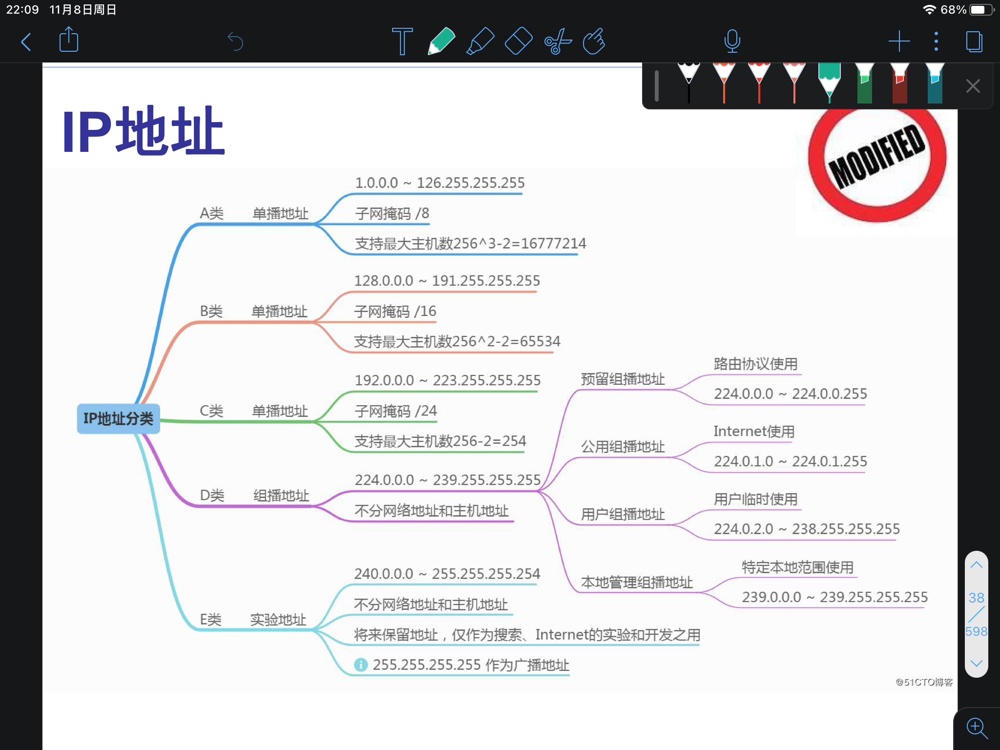
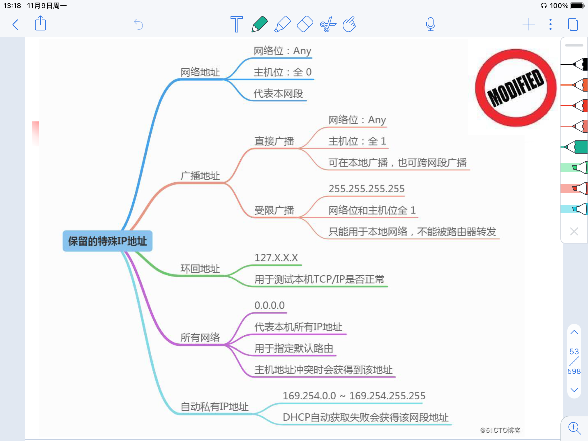

Page 0 to Page （）
网络层提供的两种服务
- 网络层向运输层提供服务
- 网络保证可靠 or 端系统保证可靠
网络负责可靠交互
- 虚电路
- 和电路交换类似，都需要建立连接，有电路交换的特点
- 但是电路交换具有排他性，虚电路没有，所以称为虚电路
- 虚电路建立逻辑上的连接，分组沿着逻辑上的连接进行分组转发
网络负责最大努力交互
因特网真正的设计思路
不提供服务质量的承诺，只进行最大努力、无连接的数据报服务
可能出错、丢失、重复、失序
出错由ICMP解决
尽最大努力交付的好处
- 路由器可以比较简单，价格低廉
- 运输层负责差错处理、流量控制
- 网络的造假大大降低，运行方式灵活，能适用多种应用
虚电路与数据报的对比
| 虚电路 | 数据报 | |
|---|---|---|
| 思路 | 网络保证可靠通信 | 端系统保证可靠通信 |
| 连接 | 有 | 无 |
| 终点地址 | 只有建立连接时使用 | 每个分组都有终点的完整地址 |
| 分组转发 | 同一条虚电路的分组按照同一路由进行转发 | 每个分组独立选择路由进行转发 |
| 当节点故障时 | 所有通过故障接待您的虚电路均不能工作 | 出故障的节点可能会丢失分组，一些路由可能会发生变化 |
| 分组的顺序 | 总是按照顺序到达终点 | 到达顺序不一定按照发送顺序 |
| 差错处理 / 流量控制 | 可以由网络负责， 也可以由主机负责 | 主机负责 |
IP
配套使用的三个协议
- 地址解析协议 ARP
- Address Reesolution Protocol
- IP地址转换为MAC地址
- IP协议族的较下层
- 网际控制报文协议 ICMP
- Internet Control Message Protocol
- 控制信息
- IP协议族的较上层
- 忘记组管理协议 IGMP
- Internet Group Management Protocol
- 实现多播/组播
- IP协议族的较上层
中间设备
- 扩展
- 转发器 物理层
- 网桥 数据链路层
- 互联
- 路由器 网络层
- 桥路器 网桥+ 路由器
- 网关 网络层以上
虚拟互联网络
又称逻辑互联网络，当互联网上的主机进行通信时，好像在一个网络上通信一样，虽然不同物理网络的异构性客观存在，但是被屏蔽掉了，对于用户而言，只能看到像在同一个网络上通信而看不到异构细节。
IP地址
- 32位二进制，四个点分十进制数，每个数取值在0 - 255
- 定义为 网络号+主机号
- 8位一组
分类
- A类
- 第一位一定是0，前8位（一个字节）表示网络号，后24位表示主机号（三个字节）
- 一个网络中主机数最多有$2^{24} - 2 = 16777214$
- 最大网络数$2^7 - 2 = 126$
- 全零作为保留地址，意为本网络，不能指派
- 全一作为环回测试地址，不能指派
- 前8位 1 - 127
- B类
- 前两位一定是10，前16位（两个字节）表示网络号，后16位表示主机号（两个字节）
- 一个网络中主机数最多有$2^{16} - 2 = 65534$
- 最大网络数$2 ^ {14} = 16384$
- 最小网络号为 128.0
- 二进制为 1000 0000 . 0000 0000
- 前8位 128 - 191
- C类
- 前三位一定是110，前24位（三个字节）表示网络号，后8位表示主机号（一个字节)
- 一个网络中主机数最多有$2^{8} - 2= 254$
- 最大网络数$2 ^ {21} = 2097152$
- 最小网络号为 192.0.0
- 二进制为 1100 0000 . 0000 0000 . 0000 0000
- 前8位 192 - 223
- D类
- 前四位一定是1110，用于多播地址
- 前8位 224 - 239
- E类
- 前四位为1111，留作以后使用
- 前8位 240 - 255

保留

| 网络号 | 主机号 | 用作源地址 | 用作目的地址 | 含义 |
|---|---|---|---|---|
| 0 | 0 | 可 | 不n可 | 本网络的本主机，相当于临时牌照，申请IP地址时使用 |
| 0 | host-id | 可 | 不可 | 本网络的某台主机 |
| 全1 | 全1 | 不可 | 可 | 只在本网络进行广播，所有路由器不进行转发 |
| net-id | 全1 | 不可 | 可 | 网络外成员对net-id中的的所有成员进行广播 |
| 127（0111 1111） | 非全零全一 | 可 | 可 | 本地软件环回测试 |
私有地址
10.0.0.0 ———— 10.255.255.255
(0000 1010 . 0000 0000 . 0000 0000 . 0000 0000 —— 0000 1010 . 1111 1111 . 1111 1111 . 1111 1111)
172.16.0.0 ———— 172.131.255.255
(1010 1100 . 0001 0000 . 0000 0000 . 0000 0000 —— 1010 1100 . 1000 0011 . 1111 1111 . 1111 1111)
192.168.0.0 ———— 192.168.255.255
(1100 0000 . 1010 1000 . 0000 0000 . 0000 0000 —— 1100 0000 . 1010 1000 . 1111 1111 . 1111 1111)
重要特点
- 分等级
- IP地址管理机构分配IP只分配网络号，主机号由网络号管理单位自行分配
- 路由器仅仅根据目的主机所连接的网络号来转发分组
- 这样就可以大大减少路由表的大小
- 找到了网络，再找主机就很容易了
- IP地址标志一个主机 / 路由器 / 链路的接口
- 路由器属于不同网络的接口有不同的IP地址
- 至少有两个不同的IP地址
- 网桥连接的若干局域网仍拥有相同的网络号，仍属于同一个网络
- 网桥 / 转发器仅仅是扩展网络
- 只包含一段线路的网络不指明IP地址
IP地址与硬件地址
这里说硬件地址而不是MAC地址，因为链路层及以下使用的的硬件地址有很多种，其中以太网使用MAC地址
MAC地址 $\in$ 硬件地址
- 路由器转发不改变IP源和目的，但是改变MAC源和目的
- 网桥转发不改变MAC源和目的
- 路由器转发改变了链路
- 数据包中间经过的路由器的IP不会出现在IP数据报的首部中
- 虽然首部有源站，但是路由器仅根据目的站的IP的网络号进行转发
- 只找到网络就行
地址解析协议 ARP Address Resolution Protocal
- 从网络层使用的IP地址解析出链路层使用的硬件地址
- 每个主机都有一个ARP Cache，里面有所在局域网上的各个主机和路由器的IP地址到硬件地址的映射表
- IP Address；MAC Address；TTL (Time to live) 使用老化策略，过久不使用的地址会被删除
- 能够减少ARP广播的数量
- 发送过程
- 向本局域网中的主机发送
- 有就把目的MAC地址写入MAC帧
- 没有就本地广播发送一个ARP请求分组，目的主机响应，把目的主机的MAC地址加入ARP Cache
- 本地广播：路由器不转发；链路层广播，MAC地址全1
- ARP请求分组：发送方硬件地址 / 发送方IP地址 / 目标方硬件地址 未知时填零/ 目标方IP地址；所有主机都会记录下发送方的硬件地址
- ARP响应分组：发送方硬件地址 / 发送方IP地址 / 目标方硬件地址 / 目标方IP地址；是广播实现的一对一通信
- 如果目的主机和源主机不在同一个局域网，发送主机获得的就不是真正目的主机的MAC地址，而是能通往目的主机的路由器的IP地址。此后发送主机发往目的主机的所有帧，都将发往该路由器，通过它向外发送。这种情况称为委托ARP或ARP代理（ARP Proxy）。
- 为什么不使用硬件地址进行通信
- 异构网络很多，互相通信需要进行复杂的地址转换
- IP使得所有网络像连接在同一个网络一样，把脏活累活交给ARP去做
IP数据报的格式
首部、数据
首部包括固定部分20字节，可选部分长度不定，总共不超过60字节
- 版本 4位
- 0100 IPv4 0110 IPv6
- 首部长度 4位
- 最大表示15个单位，一个单位4字节，所以首部最长60字节
- 区分服务 8位
- 总长度 16位
- 首部长度 + 数据长度
- 单位为字节，因此数据报最大长度为$2^{16} - 1 = 65535$字节
- 总长度不能超过MTU
- 标识 16位
- 长度超过MTU则需要分片
- 分片后标识来自同一个数据报
- 标志 3位
- 目前只有前两位有意义
- 最低位是MF（More Fragment），中间一位是DF（Don’t Fragment）
- MF=0 没有分片了
- DF=0 允许分片
- 片偏移 13位
- 表示某片在原分组中的相对位置
- 以8字节为偏移单位，需要乘八，也就是左移三位，正好补上标志部分三位的空缺